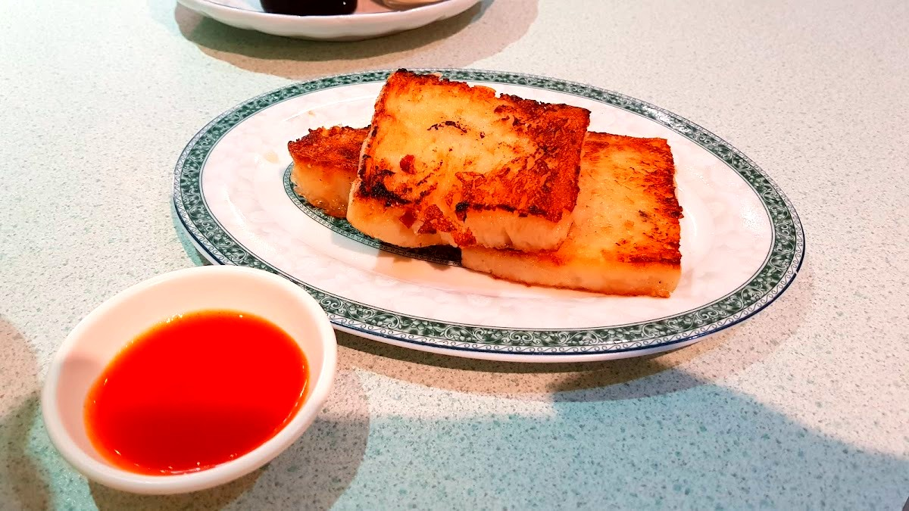
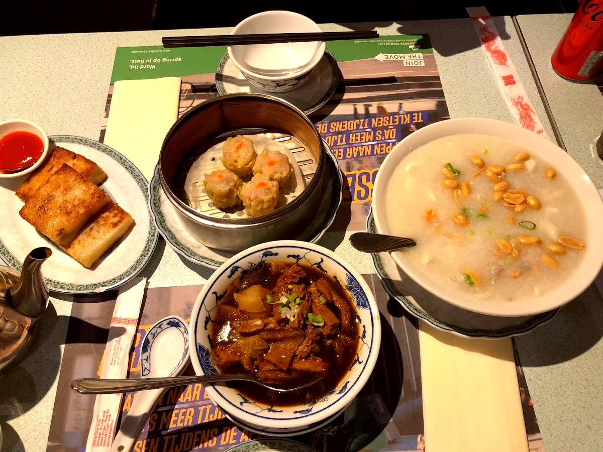
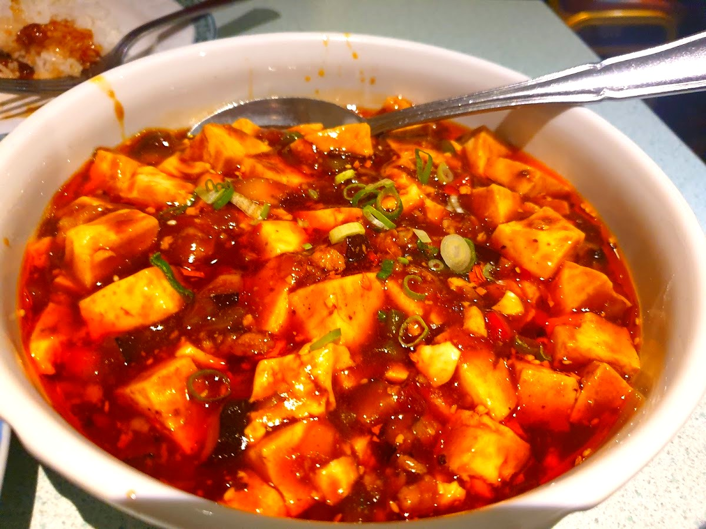
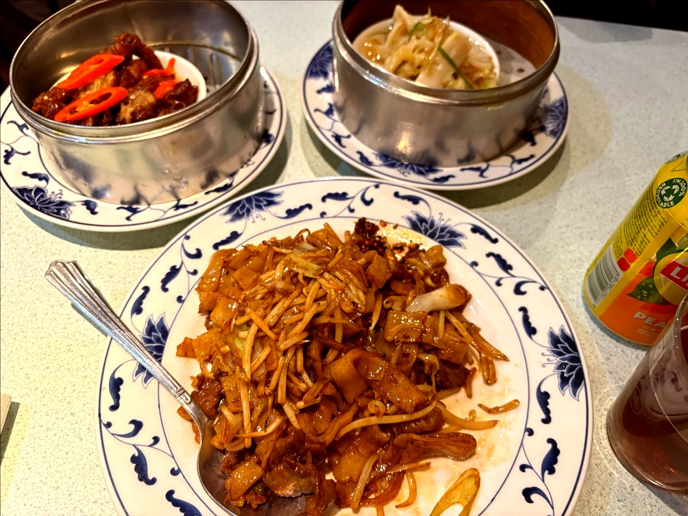
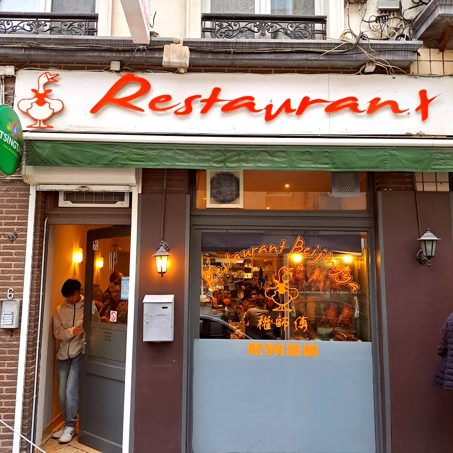
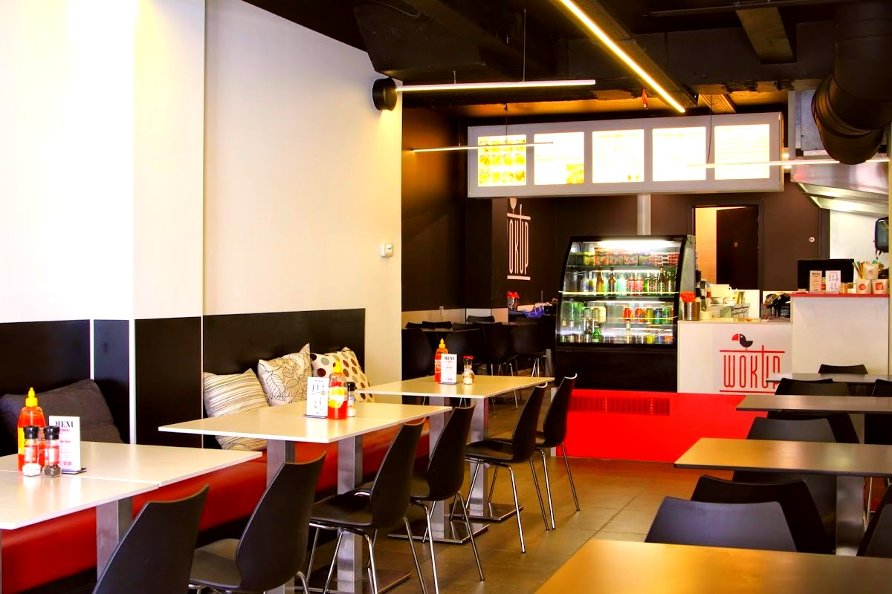

Popular Category
What would you like
to eat today?

Potages / 汤面类
Soups
17 Items
Entrées / 头盘类
Starters & Dim Sum
26 Items

Poulet & Canard / 鸡鸭类
Chicken & Duck
10 Items

Porc & Bœuf / 猪牛肉类
Pork & Beef
12 Items

Fruits de Mer / 海鲜类
Seafood
9 Items

Riz & Nouilles / 饭面类
Rice & Noodles
18 Items

Marmites & Légumes / 煲类
Pots & Vegetables
19 Items

Spécialités / 姑妈特选
Auntie's Specialties
18 Items